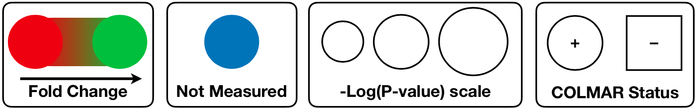
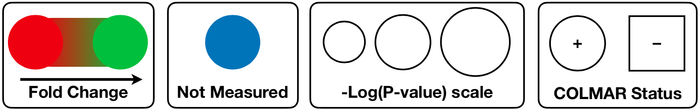

COLMAR-Pathways
STEP3: Pathway Selection
Optional: Select Metabolite(s)
-
Set size (based on -log(p-value) by default)
-
Set color (based on fold change by default)
Set size (based on -log(p-value) by default)
-
Set color (based on fold change by default)
STEP4: Pathway Visualization


STEP5: Save metabolic pathway results
Session has not been saved...
 List of compounds in our database
List of compounds in our database
 Reference
Reference
Rigel, N.; Bruschweiler, R. COLMAR-Pathways
 Questions or comments? Please feel free to contact us.
Questions or comments? Please feel free to contact us.
Acknowledgements
This web server and the research that led to it is supported by the National Institutes of Health (Grant R01 GM 066041).Most chemical shifts in COLMAR database were retrieved from the existing databases listed below, which all allow public access.
*This information is only used for the compilation of our webserver usage data.
This server was last updated at April 21 2020 11:55pm.
© 2013, The Ohio State University – Campus Chemical Instrument Center. All Rights Reserved. For questions, please contact lidawei@gmail.com
Metabolomics Metabolic Metabolite Metabolome Small molecule Profiling Metabonomics Databank Database Library Resource Query Search Assign Assignment Annotate Annotation Identify Identification Elucidate Elucidation Customized Algorithm Software NMR Nuclear Magnetic Resonance Spectroscopy Chemical Shift 1H 13C HSQC TOCSY HSQC-TOCSY COSY HMBC CT-TOCSY 1D 2D Dimension One dimensional Two dimensional Covariance DemixC NMR-based Mass spectrometry MS Accurate Mass Structure Reference Platform Carbon Proton Qualitative Bank Biomarker Bioinformatics Natural Product Bruker Varian Complex Mixture Analysis Targeted Untargeted Spectrum Spectra